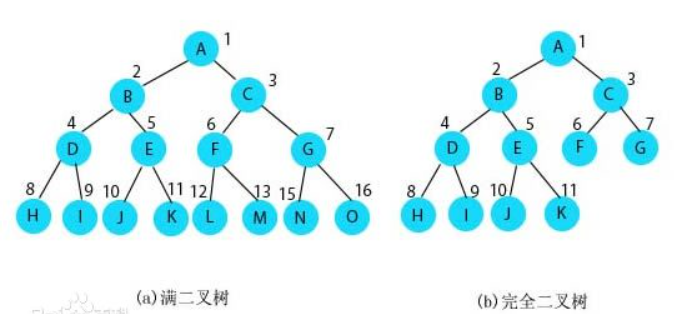
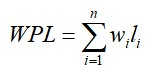
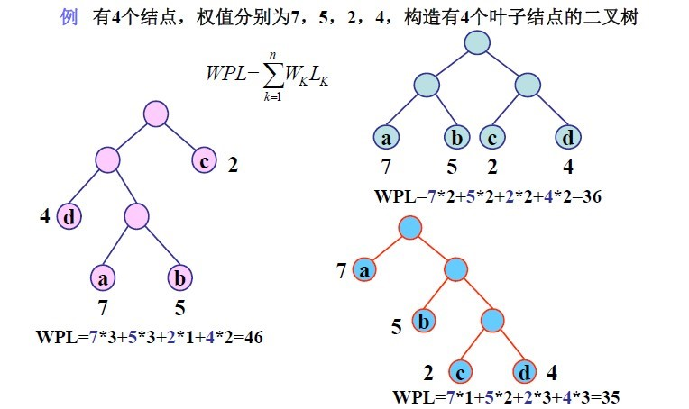
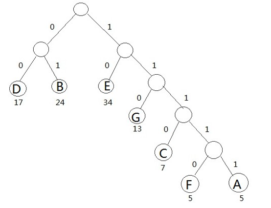

树是一种抽象数据类型或是实现这种抽象数据类型的数据结构，用来模拟具有树状结构性质的数据集合。 它是由n（n>0）个有限节点组成一个具有层次关系的集合。把它叫做“树”是因为它看起来像一棵倒挂的树，也就是说它是根朝上，而叶朝下的。
树的形式化定义:
T={D, R}
D为树T中包含n个结点的有限集食，R为树中结点之间关系的集合。
当n=0时，树为空树；
当n>0时，R是D上某个二元关系的集合，满足以下条件:
1、有且只有结点，称为根结点，该结点没有直接前驱结点;
2、除根结点外，每个结点有且仅有一个前驱结点;
3、D中每个结点可以有零个或多个后继结点;
树的递归定义
树是由n (n>=0) 个结点组成的有限集;
当n=0时，它是一个空树;
当n>0时，它满足两个条件:
有且仅有一个特定的结点，称为根结点;
除根结点外的其余结点分为m个(m>=0) 互不相交的有限集T1, T2... Tn,其中每个集合又都是一棵树，称T1, T2... Tn为根结点的子树;
①每个节点有零个或多个子节点；
②没有父节点的节点称为根节点；
③每一个非根节点有且只有一个父节点；
④除了根节点外，每个子节点可以分为多个不相交的子树；
线性结构：一对一的关系，第一个元素无前驱，最后一个元素无后继，其他元素有一个直接前驱和后继。
树结构：一对多的关系，根节点无前驱，叶子节点无后继，树中其他节点有一个直接前驱，多个直接后继。
二叉树是结点的有限集合，这个有限集，或为空集，或由一个根结点及两棵互不相交的，分别称为这个根的左子树和右子树的二叉树组成。
满二叉树：深度为k且有2k-1个节点的二叉树。编号约定:从根开始，自上而查下，自左而右，依次编号。
完全二叉树：深度为k且有n个节点的二叉树，当且仅当其每一个节点都与深度为k的满二叉树中编号从1到n-对应。
1、在二叉树的i层，至多有2^（i-1）个节点。
2、深度为k的二叉树至多有2^k-1个结点。
3、 对于任何一棵二叉树，若度为2的结点个数有n2个，则叶结点个数n必定有n2+1,即no=n2+1。
4、 具有n个结点的完全二叉树的深度必为(取下整1og2(n))+1。
5、 对完全二叉树至，若自上而下，从左向右编号，则:
编号为i的结点，左儿子的编号必为2i;右儿子编号必为2i+1;
对于编号为l的节点为根结点，无双亲，若i>1, 则双亲的编号必为i/2取下整。
(1)画出树对应的儿子兄弟链表;
(2)将链表理解为是颗二叉树的二叉链表;
(3)根据二叉链表画出二叉树。
树到二叉树的转换规则：(1)树的根节点作为对应二叉树的根节点；(2)树中的一个结点的第一个儿子是其在对应二叉树中的左儿子， 下一个兄弟是其在对应二叉树中的右儿子。
左儿子是其在对应树中的第一个儿子
右儿子是其在对应树中的下一个兄弟
第一个儿子是二叉树的左儿子
下一个兄弟是其在二叉树的右儿子
(1)把森林看成是若干树的有序集合
(2)森林中每棵树的根节点看成互为兄弟的结点
(3)把森林中的第一棵树的根作为对应的二叉树的根
(4)进行树到二叉树的转化
顺序存储：用一组连续的存储单元来存储二叉树的节点信息。只有完全二叉树通过从上到下，从左到右编号顺序存储才能还原树的结构。 一般二叉树无法还原树的结构。
链式存储：二叉链表结点依次包含了左儿子的指针、自身信息、右儿子的指针。通过链式存储的二叉树都能还原树的结构。
按一定的次序系统的访问该结构中的所有结点，使其每个结点能被访问且刚好被访问一次。 访问操作包括对结点做各种处理，如输出结点信息，对节点进行运算和修改等。树的遍历分为先序遍历、中序遍历、后序遍历。
先序遍历：先访问根结点，在访问左子树，最后访问右子树。
中序遍历：先访问左子树，在访问根结点，最后访问右子树。
后序遍历：先访问左子树，在访问右子树，最后访问根结点。
注意：只能由先序和中序或者中序和后序求出原始二叉树。
层次遍历：从根结点开始从上到下从左到右，按照结点编号顺序依次进行访问。
树的存储就是把树这种非线性结构线性化存储的过程。
二叉树表示法：节点数据从左到右包括3部分：第一个儿子的指针、存储节点的信息、下一个兄弟的指针。
树到二叉树的转化：（1）画出树对应的儿子兄弟链表；（2）将链表理解为二叉树的二叉链表；（3）根据二叉链表画出二叉树。
二叉树到树的转化：（1）第一个儿子是二叉树的左儿子；（2）下一个兄弟是其在二叉树的右儿子。
哈夫曼树概念：
树的带权路径长度（WPL）：根到每个叶结点的路径长度和该叶结点权值的乘积。 一颗有n个叶结点的二叉树，每个叶子节点带有权值Wi，从根节点到每个叶结点的路径长度为Li，则树的带权路径长度WPL为：  哈夫曼树就是使WPL值最小的二叉树。

哈夫曼树结点结构：
从左到右依次为：左孩子信息、双亲信息、权重信息、右孩子信息。
哈夫曼树的构造方法:
核心思想:每次把根节点权值最小的两颗二叉树合并
（1)将权值从小到大排序
（2）将权值最小的两个结点合并，新结点权值为所合并两个结点权值之和，得到一棵新二叉树。
（3）重复步骤1、2,直到只剩下一棵二叉树。
就得到一颗哈夫曼树。
哈夫曼树结论:
哈夫曼树并不唯一，哈夫曼树的子树也是哈夫曼树，哈夫曼树中无度为1的结点，有n个叶子结点的哈夫曼树，其总结点数为2n-1。
哈夫曼编码概念：
哈夫曼树又称作最优树，是一种带权路径长度最短的树，而通过哈夫曼树构造出的编码方式称作哈夫曼编码。
哈夫曼编码实例：
假设一个文本文件TFile中只包含7个字符{A，B，C，D，E，F，G}， 这7个字符在文本中出现的次数为{5，24，7，17，34，5，13}
利用哈夫曼树可以为文件TFile构造出符合前缀编码要求的不等长编码。
具体做法：
（1）将TFile中7个字符都作为叶子结点，每个字符出现次数作为该叶子结点的权值；
（2）规定哈夫曼树中所有左分支表示字符0，所有右分支表示字符1,将依次从根结点到每个叶子结点 所经过的分支的二进制位的序列作为该结点对应的字符编码；
（3）由于从根结点到任何一个叶子结点都不可能经过其他叶子，这种编码一定是前缀编码， 哈夫曼树的带权路径长度正好是文件TFile编码的总长度。
